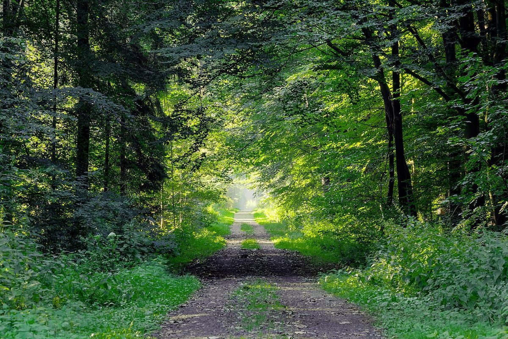
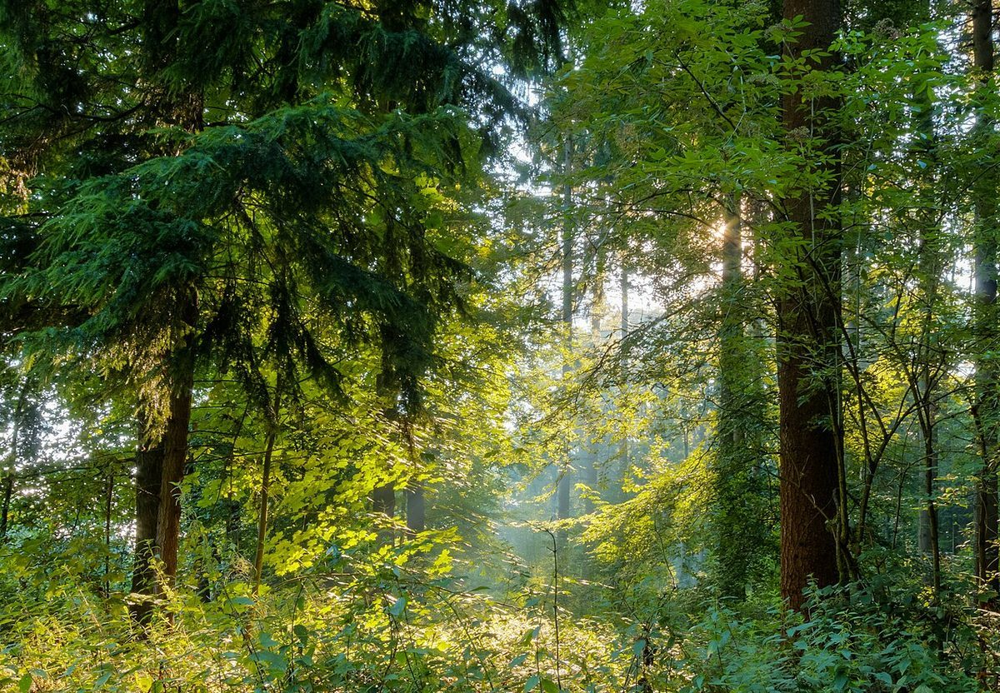

カフェ / 宮城県石巻市
こころの森ガーデンカフェ
宮城県石巻市にあるカフェ「こころの森ガーデンカフェ」のご案内ページです。営業時間やメニューなど、詳しいことは準備中。電話とInstagramでお問い合わせいただけます。
制作側の連想
二本の木のあいだに、ハンモックを。
店名の由来は分かりません。制作側は「森」という字から、木が二本並んだ形を連想し、その間に渡したハンモックのたるみ(曲線)を、このサイトの共通のかたちにしました。写真の枠も、ハンモックのように下側が丸くたるんでいます。お店の理念・由来とは無関係の、制作側の連想です。
たるみの深さ3段(イメージ)
浅く、ふつうに、深く。
写真は石巻市の風景ではありません。国外・撮影地不明のフリー素材です。



ご案内
お店のこと(確認できたものだけ)
| 所在地 | 〒986-0835 宮城県石巻市南浜町３丁目１−３２ |
|---|---|
| 電話 | 090-6682-2777 |
| 営業時間 | 準備中 |
| 定休日 | 準備中 |
| ご予約 | 準備中 |
| 駐車場 | 準備中 |
| SNS | Instagram @kokomori.fanclub |